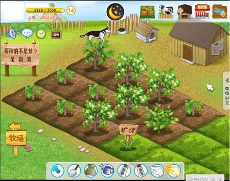

初次接触计算机：
刚开始接触电脑的时候，还是在小学，浏览的第一个页面是hao123导航。那时候还不懂什么是html，只是单纯的想上网冲浪。对于电脑游戏的兴趣也是在那时候培养的，刚开始上手的是qq农场，最喜欢到别人家里偷菜，有段时间过于沉迷，导致自己的成绩一直下滑。

了解编程：
后来初中的时候学校开设了pascal语言课，作为比较简单的高级语言，对于我这种新手正合适，那时候以为编程很简单，只要学会了大致的语法，就可以实现计算机所有的功能。现在回想起来当初真是幼稚，计算机这门专业越学越感觉深奥，从具体走向抽象，又从抽象回到具体。只有不断的学习，才能在计算机领域一直前进。
对于计算机专业的认识：
我认为计算机专业其实就是不断的造轮子，使复杂的问题简单化的专业。要想学好计算机，必须要做好学习一生的准备，作为一门顺应时代产生的专业，计算机的知识是一直在不断更新和淘汰的，也许昨天还在用的语言，明天就会出来一门更优秀的语言替代它。学会英文是学好计算机专业的必备技能，因为许多技术前沿的理论都是国外提出的
作为计算机专业的学生，不仅要学会基础的编程技能，更要对计算机背后的知识有所了解，明白计算机是如何运作和实现功能的，这才是计算机专业和单纯培养编程技术的不同之处。